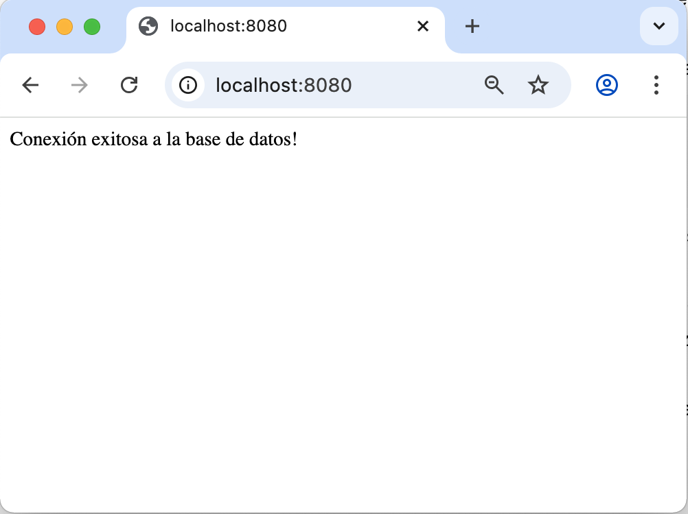
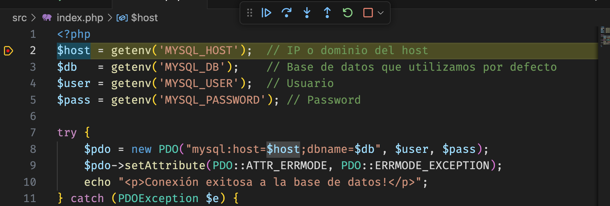

Guía paso a paso: Configuración del entorno de trabajo con Docker¶
¿Te sale un error?
Consulta Problemas frecuentes del entorno: recoge los errores más habituales al montar Docker e instalar Laravel en Windows, con su solución.
Introducción¶
Para todo desarrollo web, es fundamental contar con un entorno de trabajo adecuado que facilite la creación, prueba y despliegue de aplicaciones. Al final lo que necesitamos básicamente es:
- Un servidor web (Nginx o Apache).
- Un intérprete de PHP (PHP-FPM).
- Un sistema de gestión de bases de datos (MySQL, PostgreSQL, etc.).
Existen en el mercado múltiples soluciones para crear este entorno de trabajo.
- Instalar cada uno de los componentes por separado en nuestro sistema operativo. Esta opción puede ser complicada y propensa a errores, además de que puede generar conflictos entre versiones de librerías y dependencias.
- Utilizar soluciones empaquetadas como XAMPP, WAMP, MAMP, etc. Estas soluciones son más fáciles de instalar, pero pueden ser limitadas en cuanto a personalización. Además no podemos controlar las versiones de los componentes.
- Utilizar máquinas virtuales (como Vagrant) o contenedores (como Docker). Estas soluciones permiten crear entornos aislados y reproducibles, facilitando la gestión de dependencias y versiones.
- Incluso
Laraveltiene una solución personalizada que funciona con contenedores:Laravel Sail.
Seguramente cada desarrollador habrá encontrado su propia solución, pero en este curso vamos a utilizar Docker para crear nuestro entorno de trabajo. Docker es una plataforma que permite crear, desplegar y ejecutar aplicaciones en contenedores. Los contenedores son entornos ligeros y portátiles que contienen todo lo necesario para ejecutar una aplicación, incluyendo el código, las librerías y las dependencias.
Requisitos previos:¶
-
Instalar Docker Desktop:
- Windows/Mac: Descargar Docker Desktop
- Linux: Sigue las instrucciones de instalación para tu distribución desde Docker Docs.
-
Instalar VSCode:
- Descargar VSCode
- Recomendamos instalar la extensión de Microsoft para Docker, que nos facilitará la gestión de los contenedores desde el editor. En el punto 10 de esta guía veremos cómo usar esta extensión.
-
Preparar servicio MySQL en Docker:
En este punto tenemos tres opciones:
- Opción 1: Instalar el contenedor de MySQL desde cero. Puedes seguir las instrucciones de la documentación oficial de Docker para crear un contenedor MySQL, y llamarle docker_mysql.
- Opción 2: Utilizar un contenedor MySQL ya existente. En este caso, asumimos que ya tienes un contenedor MySQL en funcionamiento con las siguientes características:
- Opción 3: Añadir a nuestro
docker-compose.ymlel contenedor de MySQL. En este caso, añadiremos un contenedor MySQL al archivodocker-compose.ymlque vamos a crear a continuación.
A partir de ahora en los apuntes vamos a seguir la opción 3. Vamos a crear un
docker-compose.ymlque incluye un contenedor MySQL.En función de la opción elegida, tendrás que adaptar la conexión a la base de datos en el código PHP que vamos a crear. En el caso de contar ya con un contenedor MySQL en funcionamiento, o acceso a un servicio MySQL ya existente, el temario presupone que estas son las credenciales de acceso:
- Nombre del contenedor:
docker_mysql(Si utilizas un contenedor MySQL) - IP:
localhost(ohost.docker.internalsi estás con docker en Windows o Mac) - Usuario:
alumno - Contraseña:
alumno - Base de datos:
test
Paso 1: Preparación del proyecto¶
-
Crea una carpeta para tu proyecto:
- Abre una terminal (CMD, PowerShell, Terminal de VSCode, etc.).
- Crea una nueva carpeta para tu proyecto y navega dentro de ella.
-
Crea la estructura de carpetas:
Dentro de la carpeta
mi-proyecto-php, crea las siguientes carpetas y archivos:Estructura de carpetas
Una vez creada la estructura, debería verse así:
. ├── docker-compose.yml # Archivo principal de configuración de Docker ├── docker/ │ ├── nginx/ │ │ └── default.conf # Configuración de Nginx │ ├── php/ │ │ ├── Dockerfile # Dockerfile para el contenedor PHP │ │ ├── xdebug.ini # Configuración de Xdebug para PHP │ ├── scripts/ │ │ └── .gitkeep # Git keep para mantener la carpeta vacía │ └── mysql/ │ └── init/ │ └── 01-grants.sql # Script de inicialización para MySQL └── src/ └── index.php # Archivo de entrada de tu proyecto PHP (por ejemplo, Laravel)Esta es la estructura básica que vamos a utilizar para nuestro proyecto PHP con Docker.
Paso 2: Configuración de docker-compose.yml¶
-
Abre el archivo
docker-compose.ymlen tu editor de texto favorito (puede ser VSCode). -
Pega el siguiente contenido en el archivo
docker-compose.yml:
Requisitos
En nuestro caso vamos a añadir un contenedor MySQL al archivo docker-compose.yml. Si ya tienes un servidor MySQL en funcionamiento, debes eliminar la sección del contenedor mysql del archivo docker-compose.yml y utilizar las credenciales de tu servidor MySQL.
- Nombre del contenedor:
dk_mysql - IP:
localhost# IP ohost.docker.internalsi es un contenedor y estás en Windows o Mac - Usuario:
alumno - Contraseña:
alumno - Base de datos:
test
El usuario alumno tiene permisos para acceder por la red a la base de datos test.
docker-compose.yml
services:
php:
build:
context: .
dockerfile: docker/php/Dockerfile
working_dir: /var/www/html
volumes:
- ./src:/var/www/html
- ./docker/scripts:/scripts
environment:
# Xdebug apagado por defecto; se activa con XDEBUG_MODE=debug
XDEBUG_CONFIG: "client_host=host.docker.internal client_port=9003"
# Variables de entorno utilizadas en los ejemplos del curso
MYSQL_HOST: mysql
MYSQL_USER: alumno
MYSQL_PASSWORD: alumno
MYSQL_DB: test
extra_hosts:
- "host.docker.internal:host-gateway"
depends_on:
- mysql
nginx:
image: nginx:alpine
ports:
- "8080:80"
depends_on:
- php
volumes:
- ./src:/var/www/html:ro
- ./docker/nginx/default.conf:/etc/nginx/conf.d/default.conf:ro
mysql:
image: mysql:8.0
environment:
MYSQL_ROOT_PASSWORD: administrador
MYSQL_DATABASE: test
MYSQL_USER: alumno
MYSQL_PASSWORD: alumno
ports:
# Para evitar colisiones con MySQL local del host puedes cambiar el puerto 3306 por otro, por ejemplo 3307:3306
- "3306:3306"
volumes:
- dbdata:/var/lib/mysql
- ./docker/scripts:/scripts
- ./docker/mysql/init:/docker-entrypoint-initdb.d:ro
tmpfs:
- /tmp
volumes:
dbdata:
Ficheros .yaml
Los ficheros .yaml son muy sensibles a los espacios y tabulaciones. Asegúrate de que la indentación es correcta para evitar errores al ejecutar Docker Compose. Si te da problemas puedes descargar el archivo de ejemplo desde aquí.
En el archivo docker-compose.yml:
Definimos los tres servicios principales de nuestro entorno de desarrollo: php, nginx y mysql. Además, configuramos los volúmenes, variables de entorno y otros parámetros necesarios para que los contenedores puedan trabajar juntos correctamente.
Servicio php¶
-
build:- En lugar de usar directamente una imagen ya preparada, el contenedor PHP se construye a partir del archivo
docker/php/Dockerfile. - Esto nos permite personalizar el entorno PHP e instalar exactamente las extensiones y herramientas que necesitamos.
-
working_dir: /var/www/html: -
Define el directorio de trabajo dentro del contenedor PHP.
- Será la carpeta en la que ejecutaremos los comandos y donde estará montado el código de nuestra aplicación.
-
volumes: -
./src:/var/www/html- Monta la carpeta
srcde nuestro proyecto dentro del contenedor. -
Todo lo que editemos en
srcdesde nuestra máquina estará disponible inmediatamente dentro del contenedor../docker/scripts:/scripts
-
Monta una carpeta adicional para scripts auxiliares que podamos utilizar durante el desarrollo.
environment:
- Monta la carpeta
-
XDEBUG_CONFIG-
Define la configuración básica de Xdebug para que pueda conectarse con Visual Studio Code.
MYSQL_HOST,MYSQL_USER,MYSQL_PASSWORD,MYSQL_DB
-
Son variables de entorno que utilizaremos desde PHP para conectarnos a MySQL sin tener que escribir los datos directamente en el código.
extra_hosts:
-
-
Añade una entrada especial para que el contenedor pueda localizar al host con el nombre
host.docker.internal. - Esto es útil, por ejemplo, para la depuración con Xdebug.
-
depends_on: -
Indica que el servicio
phpdepende del serviciomysql. - Docker Compose arrancará primero MySQL antes de iniciar PHP.
- En lugar de usar directamente una imagen ya preparada, el contenedor PHP se construye a partir del archivo
Servicio nginx¶
-
image: nginx:alpine:- Utiliza la imagen oficial ligera de Nginx basada en Alpine Linux.
- Es una opción muy habitual por su bajo consumo de recursos.
-
ports: -
8080:80- Expone el puerto 80 del contenedor Nginx en el puerto 8080 de nuestra máquina.
- Gracias a esto podremos acceder a la aplicación desde el navegador en
http://localhost:8080. depends_on:
-
Indica que Nginx depende del servicio
php. -
volumes: -
./src:/var/www/html:ro- Monta la carpeta
srcdentro del contenedor Nginx en modo solo lectura. -
Esto es suficiente para servir la aplicación y añade una pequeña mejora de seguridad.
./docker/nginx/default.conf:/etc/nginx/conf.d/default.conf:ro
-
Monta el fichero de configuración personalizado de Nginx.
- Monta la carpeta
Servicio mysql¶
-
image: mysql:8.0:- Utiliza la imagen oficial de MySQL 8.0.
-
environment: -
MYSQL_ROOT_PASSWORD-
Contraseña del usuario
root.MYSQL_DATABASE
-
Base de datos inicial que se creará automáticamente.
MYSQL_USERyMYSQL_PASSWORD
-
Usuario y contraseña que utilizaremos normalmente en el curso para conectarnos a la base de datos.
ports:
-
-
3306:3306- Expone MySQL en el mismo puerto estándar del host.
- Si ya tienes un MySQL local instalado, puedes cambiarlo por ejemplo a
3307:3306. volumes:
-
dbdata:/var/lib/mysql- Utiliza un volumen Docker para almacenar los datos de MySQL de forma persistente.
-
Así, aunque eliminemos el contenedor, los datos podrán mantenerse.
./docker/scripts:/scripts
-
Monta la carpeta de scripts auxiliares.
./docker/mysql/init:/docker-entrypoint-initdb.d:ro
-
Monta la carpeta con scripts SQL de inicialización.
- MySQL ejecutará automáticamente estos scripts la primera vez que se cree el contenedor.
tmpfs:
-
- /tmp- Crea un sistema de archivos temporal en memoria para la carpeta
/tmpdentro del contenedor.
- Crea un sistema de archivos temporal en memoria para la carpeta
Volumen dbdata¶
Este volumen se utiliza para guardar los datos de MySQL fuera del contenedor. De esta manera, la información de la base de datos no se pierde al detener o recrear los servicios.
El fichero docker/php/xdebug.ini configura Xdebug, el depurador de PHP que usaremos en el paso 10. Su contenido es:
Configuración Xdebug
Esto habilitará Xdebug en el contenedor PHP y permitirá la depuración remota.
Si lo dejas vacío, la depuración del paso 10 no funcionará
Sin este contenido, Xdebug queda en su modo por defecto (develop) y nunca se conecta con VS Code: pulsas F5, recargas la página y no se detiene en ningún punto de interrupción. Como el Dockerfile copia este archivo dentro de la imagen, si lo rellenas o lo cambias después tienes que reconstruir el contenedor PHP:
Para comprobar que está activo: docker compose exec php php -r "echo ini_get('xdebug.mode');" debe mostrar debug. (Funciona igual en CMD, PowerShell y Git Bash; grep no existe en CMD ni en PowerShell.)
Paso 3: Configuración de Nginx¶
-
Abre el archivo
docker/nginx/default.conf. -
Pega el siguiente contenido en el archivo
default.conf:
Configuración nginx
Paso 4: Crear el Dockerfile para PHP¶
Este archivo define cómo se construye la imagen de PHP con las extensiones necesarias. Es necesario para que PHP pueda interactuar con MySQL, Nginx y otras librerías. Se ejecutará cuando construyamos el contenedor PHP.
-
Abre el archivo
docker/php/Dockerfile. -
Pega el siguiente contenido para crear el contenedor de PHP con las extensiones necesarias, de momento las librerías PDO y MySQL:
En este ejemplo también copiamos un fichero de configuración adicional (xdebug.ini) dentro de /usr/local/etc/php/conf.d, que es el directorio donde PHP carga configuraciones extra.
Dockerfile PHP
FROM php:8.3-fpm
RUN apt-get update && apt-get install -y \
git curl unzip zip libzip-dev libpng-dev \
&& docker-php-ext-install pdo_mysql zip gd \
&& pecl install xdebug \
&& docker-php-ext-enable xdebug \
&& apt-get clean && rm -rf /var/lib/apt/lists/*
COPY --from=composer:2 /usr/bin/composer /usr/bin/composer
COPY docker/php/xdebug.ini /usr/local/etc/php/conf.d/xdebug.ini
WORKDIR /var/www/html
CMD ["php-fpm"]
Podemos resumir el contenido del Dockerfile en los siguientes puntos:
-
FROM php:8.3-fpm: utiliza la imagen base oficial de PHP 8.3 con PHP-FPM. -
apt-get install ...: instala utilidades y librerías necesarias, comogit,curl,unzip,zip,libzip-devylibpng-dev. -
docker-php-ext-install ...: instala extensiones de PHP necesarias para este entorno, comopdo_mysql,zipygd. -
pecl install xdebug: instala la extensión Xdebug para permitir la depuración. -
docker-php-ext-enable xdebug: habilita Xdebug dentro de PHP. -
apt-get clean && rm -rf /var/lib/apt/lists/*: limpia la caché de paquetes para reducir el tamaño final de la imagen. -
COPY --from=composer:2 ...: copia Composer desde la imagen oficial, de forma que queda disponible dentro del contenedor sin necesidad de instalarlo manualmente. -
COPY docker/php/xdebug.ini ...: copia el archivo de configuración de Xdebug dentro del directorio de configuración de PHP. -
WORKDIR /var/www/html: define la carpeta de trabajo dentro del contenedor. -
CMD ["php-fpm"]: indica que el contenedor arrancará ejecutando PHP-FPM.
Paso 5: Crear un archivo PHP de prueba¶
Vamos a crear un archivo PHP simple para testear el entorno de trabajo. En un archivo vamos a conseguir:
- a) Probar si nginx funciona correctamente.
- b) Probar si PHP funciona correctamente (debe ejecutar código PHP).
-
c) Probar si PHP se conecta correctamente a MySQL usando PDO.
-
Abre el archivo
src/index.php(el que creaste vacío en el paso 1). Tiene que estar ensrc/, porque es la única carpeta que ve el servidor: endocker-compose.yml,./srcse monta como/var/www/html. Unindex.phpen cualquier otra carpeta, comodocker/php/, no se ejecuta nunca. -
Pega el siguiente contenido para crear un archivo PHP que se conecte a MySQL:
prueba php y conexión a MySQL
<?php
$host = getenv('MYSQL_HOST'); // IP o dominio del host
$db = getenv('MYSQL_DB'); // Base de datos que utilizamos por defecto
$user = getenv('MYSQL_USER'); // Usuario
$pass = getenv('MYSQL_PASSWORD'); // Password
try {
$pdo = new PDO("mysql:host=$host;dbname=$db", $user, $pass);
$pdo->setAttribute(PDO::ATTR_ERRMODE, PDO::ERRMODE_EXCEPTION);
echo "<p>Conexión exitosa a la base de datos!</p>";
} catch (PDOException $e) {
echo "<p>Error al conectar a la base de datos: " . $e->getMessage() . "</p>";
echo "<p>Host: $host, DB: $db, User: $user, Pass: $pass</p>";
phpinfo(); // Muestra información de PHP para depuración
}
?>
Paso 6: Dar permisos al usuario 'alumno' en MySQL¶
Para completar los permisos del usuario vamos a utilizar el fichero docker/mysql/init/01-grants.sql que se ejecutará automáticamente la primera vez que se cree el contenedor de MySQL.
Recuerda que el usuario se crea durante la inicialización del contenedor de MySQL. Ahora lo que hacemos es completar los permisos de este usuario para poder utilizarlo desde nuestras aplicaciones.
GRANT ALL PRIVILEGES ON *.* TO 'alumno'@'%' IDENTIFIED BY 'alumno' WITH GRANT OPTION;
FLUSH PRIVILEGES;
Paso 7: Levantar el entorno con Docker¶
-
Abre la terminal en la carpeta del proyecto.
-
Levanta los contenedores de Docker usando
docker compose:La primera vez que levantes el contenedor, debes usar el siguiente comando para construir las imágenes y levantar los contenedores:
Podemos añadir
-dal final del comando para que se ejecute en segundo plano:Esto descargará las imágenes necesarias y construirá los contenedores.
Las próximas veces que levantes el contenedor no será necesario usar
--build, ya que no has hecho cambios en elDockerfileni en eldocker-compose.yml. Si vuelves a utilizar--build, Docker volverá a construir la imagen, lo que puede tardar un poco más. Y puedes perder los cambios que hayas hecho en el contenedor. Para volver a levantar el contenedor, puedes usar:Si quieres que se ejecute en segundo plano, puedes añadir
-dal final del comando:Si quieres parar el contenedor, puedes usar:
Para eliminar los contenedores y las imágenes asociadas a ellos, puedes usar:
Modificación de los contenedores
Si modificas el
Dockerfileo eldocker-compose.yml, tendrás que volver a ejecutardocker compose up --buildpara que los cambios surtan efecto. Pero antes es conveniente eliminar los contenedores y las imágenes para evitar conflictos. Puedes hacerlo con:Luego volvemos a construir los contenedores con:
Paso 8: Verificar el entorno¶
-
Una vez que los contenedores estén levantados, abre tu navegador y accede a http://localhost:8080.
-
Deberías ver el mensaje "Conexión exitosa a la base de datos!" si todo está configurado correctamente.
Mensaje

Si ves un mensaje de error, revisa la configuración de tu docker-compose.yml, el Dockerfile y el archivo index.php. También puedes revisar los logs de los contenedores para obtener más información sobre cualquier error que pueda estar ocurriendo.
Paso 9: Conectarse al contenedor MySQL¶
En ocasiones puede ser necesario conectarse al contenedor MySQL para crear tablas, insertar datos, etc. Para ello:
- Conectarse al contenedor MySQL con el siguiente comando:
Para conectarnos al contenedor MySQL ejecutando el cliente mysql tenemos dos opciones:
Conectarse a MySQL
Opción recomendada, con el nombre del servicio:
El primer mysql es el nombre del servicio definido en el docker-compose.yml. El segundo mysql es el comando que queremos ejecutar dentro del contenedor.
Otra opción, con el nombre real del contenedor:
Cambia actividades-laravel-mysql-1 por el nombre de tu contenedor MySQL. Lo ves con docker ps.
¿Cómo se llaman los contenedores?
Docker Compose los llama <carpeta-del-proyecto>-<servicio>-1. Si tu carpeta es actividades-laravel, serán actividades-laravel-php-1, actividades-laravel-nginx-1 y actividades-laravel-mysql-1 (compruébalo con docker ps). Por eso es más cómodo docker compose exec <servicio>: usa el nombre del servicio del docker-compose.yml (php, nginx o mysql), que es siempre el mismo. Ojo: no mezcles las dos formas; docker exec -it mysql ... falla porque no hay ningún contenedor que se llame solo mysql.
Atención
Si utilizas el comando docker exec, recuerda sustituir nombre_del_contenedor por el nombre real del contenedor MySQL. Si utilizas docker compose exec mysql ..., no necesitas conocer el nombre exacto del contenedor. Si has utilizado los datos de los apuntes la contraseña del usuario root es administrador.
- Una vez dentro del contenedor MySQL, puedes ejecutar comandos SQL como:
El servidor mostrará las bases de datos disponibles.
Usuario alumno
Si por algún motivo durante la creación del contenedor de MySQL no se ha creado el usuario alumno, puedes crearlo con los siguientes comandos SQL. Es el usuario que vamos a utilizar en los ejemplos de PHP para conectarnos a la base de datos.
Si el usuario se ha creado necesitamos que tenga permisos para acceder a todas las bases de datos ya que es el usuario que utilizaremos en los ejemplos de PHP para conectarnos a la base de datos. Para ello ejecutamos:
Desde el punto de vista de seguridad, este usuario alumno no es recomendable en un entorno de producción, pero para fines educativos y de desarrollo es suficiente.
Para ver si esta creado el usuario alumno, puedes ejecutar:
Esto mostrará los usuarios creados en el servidor MySQL. El usuario alumno debe aparecer en la lista como: user: alumno, host: %. Esto significa que el usuario alumno puede conectarse desde cualquier host.
Paso 10: Configurar Visual Studio Code para depuración con Xdebug¶
- Instala la extensión PHP Debug (autor: Xdebug, identificador
xdebug.php-debug) desde la vista de extensiones (Ctrl+Shift+X). Sin ella, la opciónPHPno aparece en el paso 4. - Abre la carpeta del proyecto en Visual Studio Code.
- Ve a la pestaña de
Run and Debug(o presionaCtrl+Shift+D). - Haz clic en
create a launch.json filey seleccionaPHP. Si VS Code te propone otro depurador (por ejemplo, uno de SQL porque tienes abierto un.sql), cierra ese aviso: no hace falta. - Reemplaza el contenido del archivo
launch.jsoncon el siguiente:
{
"version": "0.2.0",
"configurations": [
{
"name": "Listen for XDebug",
"type": "php",
"request": "launch",
"port": 9003,
"pathMappings": {
"/var/www/html": "${workspaceFolder}/src"
},
"log": true
}
]
}
Esto te creará un archivo .vscode/launch.json en la raíz del proyecto. De esta manera cuando lancemos el entorno de depuración en VSCode, este se conectará al contenedor PHP y podrás depurar tu código PHP.
Para iniciar la depuración:
- Coloca un punto de interrupción (breakpoint) en tu código PHP. (index.php por ejemplo).
- Inicia la depuración en VSCode haciendo clic en el botón verde de
Start Debuggingo presionandoF5. - Accede a tu aplicación en el navegador (http://localhost:8080). Cuando el código alcance el punto de interrupción, VS se detendrá y podrás inspeccionar variables, pilas de llamadas, etc.
Depuración con Xdebug

Paso 13: Usar VSCode con Docker¶
Trabajar con contenedores desde VSCode¶
Para facilitar el trabajo con Docker sin necesidad de usar la terminal continuamente, utilizaremos Visual Studio Code junto con su extensión oficial.
-
Instala la extensión Docker (Microsoft) en VSCode.
-
Una vez instalada, aparecerá un nuevo panel de Docker en la barra lateral izquierda. Desde este panel podrás gestionar fácilmente tu entorno de contenedores.
-
En la sección Containers, podrás ver los contenedores en ejecución. Haz clic derecho sobre el contenedor
phpy selecciona “Attach Visual Studio Code”. -
Se abrirá una nueva ventana de VSCode conectada directamente al contenedor PHP. Desde esta ventana podrás editar los archivos y trabajar dentro del contenedor como si fuera tu entorno local.
Funcionalidades principales de la extensión Docker¶
La extensión de Docker permite gestionar el entorno de desarrollo de forma visual y sencilla:
- Ver contenedores en ejecución y su estado.
- Iniciar, detener o reiniciar contenedores con un clic.
- Acceder a los logs de cada contenedor.
- Abrir una terminal dentro del contenedor (exec).
- Explorar imágenes, volúmenes y redes.
- Adjuntarse a un contenedor para trabajar directamente desde VSCode.
Con esta herramienta evitamos depender constantemente de comandos en terminal y facilitamos el trabajo, especialmente para usuarios que se están iniciando en Docker.
Conclusión¶
Has configurado un entorno de desarrollo web completo con Docker, basado en Nginx, PHP-FPM y MySQL, organizado de forma modular y preparada para proyectos reales. Este enfoque permite separar claramente la configuración del entorno (contenedores) del código de la aplicación, facilitando el mantenimiento y la escalabilidad.
Estructura del proyecto¶
| Carpeta/Fichero | Descripción |
|---|---|
docker-compose.yml |
Define los servicios Docker: PHP, Nginx y MySQL. |
docker/ |
Carpeta que contiene toda la configuración del entorno Docker. |
docker/nginx/default.conf |
Configuración de Nginx para servir la aplicación. |
docker/php/Dockerfile |
Imagen personalizada de PHP con extensiones necesarias, Composer y Xdebug. |
docker/php/xdebug.ini |
Configuración de Xdebug para depuración. |
docker/mysql/init/01-grants.sql |
Script de inicialización de la base de datos. |
docker/scripts/ |
Carpeta reservada para scripts auxiliares del proyecto. |
src/ |
Carpeta donde se desarrollará la aplicación (Laravel). |
src/index.php |
Archivo de prueba para verificar el entorno. |
.vscode/launch.json |
Configuración de depuración en Visual Studio Code. |
Puesta en marcha del entorno¶
Para iniciar el entorno de desarrollo, abre una terminal en la carpeta del proyecto y ejecuta:
Si es la primera vez o has realizado cambios en la configuración:
Para detener el entorno:
Carpeta de trabajo¶
La carpeta de trabajo principal es src, que está montada dentro del contenedor PHP en la ruta /var/www/html.
Aquí es donde se instalará Laravel y donde desarrollarás la aplicación. Esta separación permite mantener el código independiente de la infraestructura, facilitando la reutilización del entorno en otros proyectos.
Idea clave¶
Este enfoque basado en Docker te permite trabajar con un entorno aislado, reproducible y portable, evitando problemas de configuración entre diferentes equipos y asegurando que todos los participantes del curso trabajen en las mismas condiciones.
¡Enhorabuena!
Has configurado con éxito tu entorno de desarrollo web con Docker. Ahora estás listo para comenzar a desarrollar tu aplicación Laravel en un entorno profesional y moderno.
Recuerda levantar el entorno con docker compose up -d cada vez que quieras trabajar en tu proyecto, y detenerlo con docker compose down cuando hayas terminado.
Conclusión¶
Has configurado un entorno de desarrollo web completo con Docker, basado en Nginx, PHP-FPM y MySQL, organizado de forma modular y preparada para proyectos reales. Este enfoque permite separar claramente la configuración del entorno (contenedores) del código de la aplicación, facilitando el mantenimiento y la escalabilidad.
Otras opciones de entorno de desarrollo¶
Aunque en este curso utilizamos Docker, existen otras alternativas para trabajar con Laravel. Algunas soluciones se basan en instalaciones locales de software (como XAMPP o Herd), otras utilizan máquinas virtuales (como Vagrant/Homestead) y otras también emplean contenedores pero de forma más automatizada (como Laravel Sail). La elección depende del nivel del desarrollador, la necesidad de control sobre el entorno y la facilidad de uso. En entornos profesionales, Docker es una de las opciones más utilizadas por su portabilidad y consistencia.
| Opción | Tipo | Gratuito | Uso recomendado |
|---|---|---|---|
| Instalación manual | Binarios | Sí | Control total / avanzado |
| XAMPP / MAMP | Binarios | Sí | Aprendizaje inicial |
| Vagrant / Homestead | Máquina virtual | Sí | Entornos Laravel clásicos |
| Docker | Contenedores | Sí | Profesional / reproducible |
| Laravel Sail | Contenedores (Docker) | Sí | Laravel simplificado |
| Laravel Herd | Binarios | Básico | Desarrollo rápido local |
| Cloud (Codespaces, etc.) | Remoto | Básico | Sin instalación local |